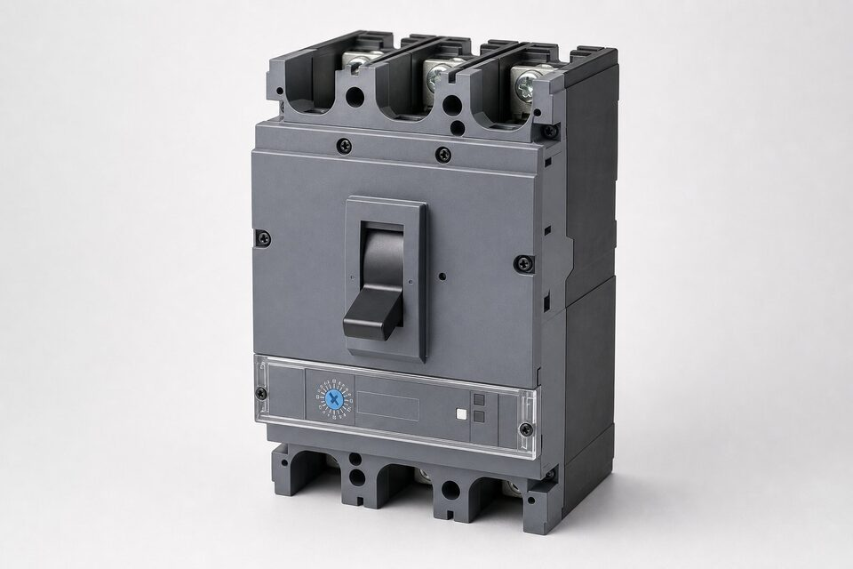

کلید کامپکت چیست؟
کلید کامپکت یا (MCCB) قطعکنندهای است که مدار را زیر بار قطع و وصل میکند و در دو حالت خطا به صورت خودکار تریپ مینماید: اضافه بار پایدار و اتصال کوتاه. بدنه آن یک قاب عایقی قالبی یکپارچه است که محفظه خاموشکننده قوس، کنتاکتها و واحد تریپ را در خود جای میدهد. رنج جریان نامی این کلیدها معمولا از حدود دهها آمپر تا چند هزار آمپر را پوشش میدهد و به همین دلیل حد میانی بین مینیاتوری و کلید هوایی را پر میکند. در تابلوهای توزیع صنعتی، (MCCB) رایجترین حفاظت برای فیدرهای خروجی، تابلوهای فرعی و مصرفکنندههای متوسط است و با لوازم جانبی مانند کنتاکت کمکی، شانت تریپ و موتور شارژ تکمیل میشود.

واحدهای تریپ: حرارتی-مغناطیسی و الکترونیکی
واحد تریپ حرارتی-مغناطیکی از دو مکانیزم مستقل استفاده میکند: یک المان حرارتی که با گرم شدن در اثر اضافه بار پایدار خم شده و پس از تاخیر مشخص کلید را تریپ میکند، و یک سیمپیچ مغناطیسی که در لحظه وقوع اتصال کوتاه با جریان بالا، قطع آنی را انجام میدهد. این ساختار ساده، مقاوم و اقتصادی است و برای اغلب کاربردها کافی است. واحد تریپ الکترونیکی جریان را به صورت پیوسته اندازه میگیرد و منحنی حفاظت را بر اساس آن محاسبه میکند؛ تنظیمات زمان و جریان در باندهای مختلف قابل تغییر است و برخی مدلها قابلیت اندازهگیری پارامترهای شبکه و ارتباط با سیستم مانیتورینگ را نیز دارند. در شبکههایی که هماهنگی حفاظتی دقیق لازم است، واحد الکترونیکی انتخاب حرفهای است.
جریان نامی، قدرت قطع و مشخصات کلیدی
- جریان نامی (In): بیشترین جریانی که کلید به صورت مداوم تحمل میکند.
- قدرت قطع (Icu): حداکثر جریان اتصال کوتاه قابل قطع ایمن؛ باید از مقدار محاسبهشده نقطه نصب بیشتر باشد.
- جریان تحمل کوتاهمدت: در کلیدهای دستهبندیشده برای تاخیر عمدی در قطع، اهمیت دارد.
- تعداد پل و ولتاژ عایقی: متناسب سطح ولتاژ شبکه و نوع بار.
- دسته کاربرد (A) یا (B): تعیینکننده رفتار کلید در شرایط اتصال کوتاه برای هماهنگی حفاظت.
یک نکته مهم در انتخاب، رابطه بین قدرت قطع و محل نصب است: هر چه به ترانس اصلی نزدیکتر باشیم، جریان اتصال کوتاه بالاتر است و قدرت قطع بیشتری لازم میشود. انتخاب کلیدی با قدرت قطع کمتر از مقدار محاسبهشده، خطر جدی ایمنی ایجاد میکند؛ در بهترین حالت کلید آسیب میبیند و در بدترین حالت قوس مهار نمیشود. به همین دلیل در استعلام، ذکر نقطه نصب و جریان اتصال کوتاه آن نقطه الزامی است تا مدل مناسب پیشنهاد شود.
انتخاب و هماهنگی حفاظت
کلید کامپکت باید در یک سلسلهمراتب حفاظتی با بالادست و پاییندست خود هماهنگ باشد: در صورت وقوع خطا در یک فیدر، فقط نزدیکترین کلید به نقطه خطا باید تریپ کند و بقیه شبکه برقدار بمانند. این انتخابپذیری با مقایسه منحنیهای تریپ کلیدهای متوالی بررسی میشود و جداول هماهنگی سازندگان کار را ساده میکنند. همچنین باید مکانیزم قفل و اینترلاک لازم برای کلیدهایی که در ورودی تابلوهای انتقالی استفاده میشوند لحاظ گردد. در محیطهای با دمای بالا، ضریب تصحیح جریان نامی را اعمال کنید، چون المان حرارتی واحد تریپ به دمای محیط حساس است و در دمای بالاتر زودتر عمل میکند.
نکات استعلام خرید
در استعلام، جریان نامی بار، قدرت قطع موردنیاز بر اساس محل نصب، نوع واحد تریپ، تعداد پل و لوازم جانبی موردنیاز را ذکر کنید. اگر کلید جایگزین نمونه نصبشده است، برند و تیپ دقیق فعلی را اعلام نمایید تا ابعاد ترمینال و نصب تطبیق داده شود. در پروژههای دارای وندورلیست، برندهای مجاز را از ابتدا مشخص کنید؛ چون قیمت بین برندهای مختلف میتواند تفاوت قابل توجهی داشته باشد. در دسترس بودن قطعات یدکی و خدمات محلی نیز برای تجهیزات حساس معیار مهمی است که معمولا در برندهای شناختهشده بهتر تامین میشود.
جمعبندی
کلید کامپکت انتخاب پیشفرض حفاظت فیدرها در فشار ضعیف صنعتی است. با تعیین درست جریان نامی و قدرت قطع، انتخاب واحد تریپ متناسب و بررسی هماهنگی حفاظت با کلیدهای مجاور، شبکهای ایمن و قابل مدیریت خواهید داشت. ذکر پارامترهای نصب در استعلام، سریعترین مسیر رسیدن به پیشنهاد فنی دقیق است.
سوالات رایج
کلید کامپکت چیست؟
قطعکننده حفاظتی فشار ضعیف با قاب عایقی یکپارچه که در برابر اضافه بار و اتصال کوتاه حفاظت میکند؛ برای فیدرها و مصرفکنندههای با جریان متوسط در تابلوهای صنعتی استفاده میشود.
تفاوت واحد تریپ حرارتی-مغناطیسی و الکترونیکی چیست؟
واحد حرارتی-مغناطیسی ساده و اقتصادی است با قابلیت تنظیم محدود؛ واحد الکترونیکی منحنی حفاظت دقیقتر و قابل تنظیم گستردهتری دارد و در برخی مدلها اندازهگیری و ارتباط نیز ارائه میدهد.
قدرت قطع چه پارامتری است؟
بیشترین جریان اتصال کوتاهی که کلید میتواند به صورت ایمن قطع کند بدون آسیب دیدن؛ این مقدار باید حداقل برابر جریان اتصال کوتاه محاسبهشده در نقطه نصب باشد.
کلید کامپکت چه زمانی به جای کلید هوایی انتخاب میشود؟
وقتی جریان نامی و قدرت قطع موردنیاز در رنج کلید کامپکت قرار دارد و تنظیمات گسترده یا قابلیت نگهداری پیشرفته کلید هوایی لازم نیست؛ کلید کامپکت فضای کمتر و قیمت پایینتری دارد.
مطالب مرتبط
با ذکر جریان نامی، قدرت قطع و نوع واحد تریپ، کلید کامپکت از برندهای معتبر عرضه میشود.
مشاهده صفحه محصول ← ثبت RFQ همین محصولتامین این تجهیزات را به پیشرو تجهیز فرتاک بسپارید
شرکت پیشرو تجهیز فرتاک تامینکننده تخصصی تجهیزات صنعتی برای پروژههای نفت، گاز، پتروشیمی، فولاد و نیروگاهی است. برای دریافت پیشنهاد فنی و قیمت، استعلام (RFQ) خود را ثبت کنید تا کارشناسان مهندسی فروش در کوتاهترین زمان پاسخ دهند.
- تامین برق صنعتیتجهیزات تابلو و حفاظتی
- تامین تجهیزات صنایع نفت و گازپکیج مواد مطابق وندورلیست